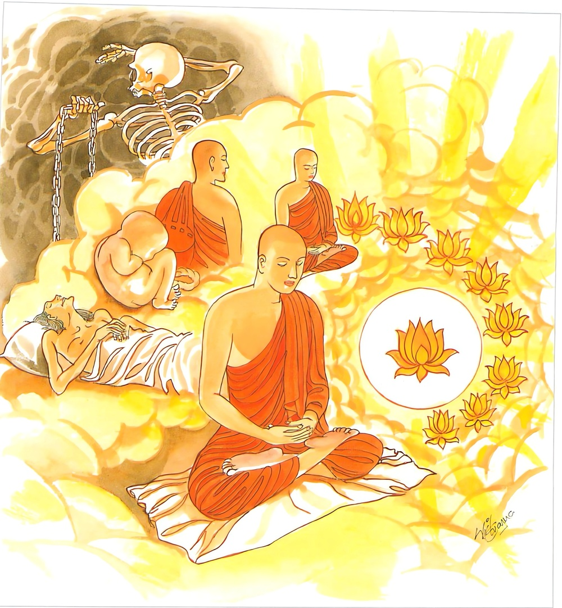
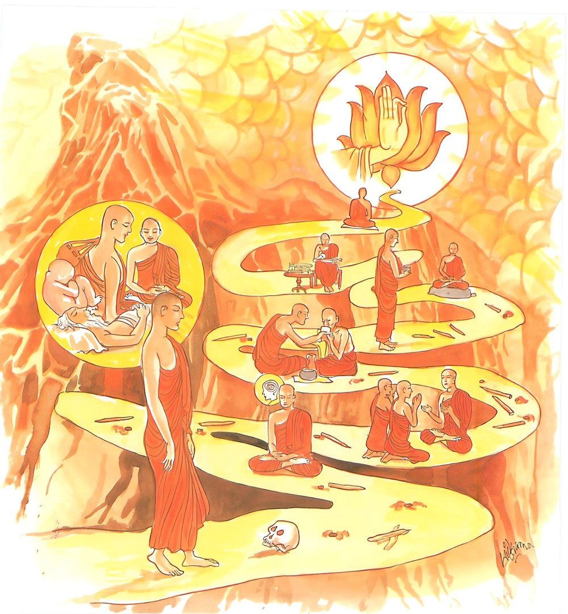
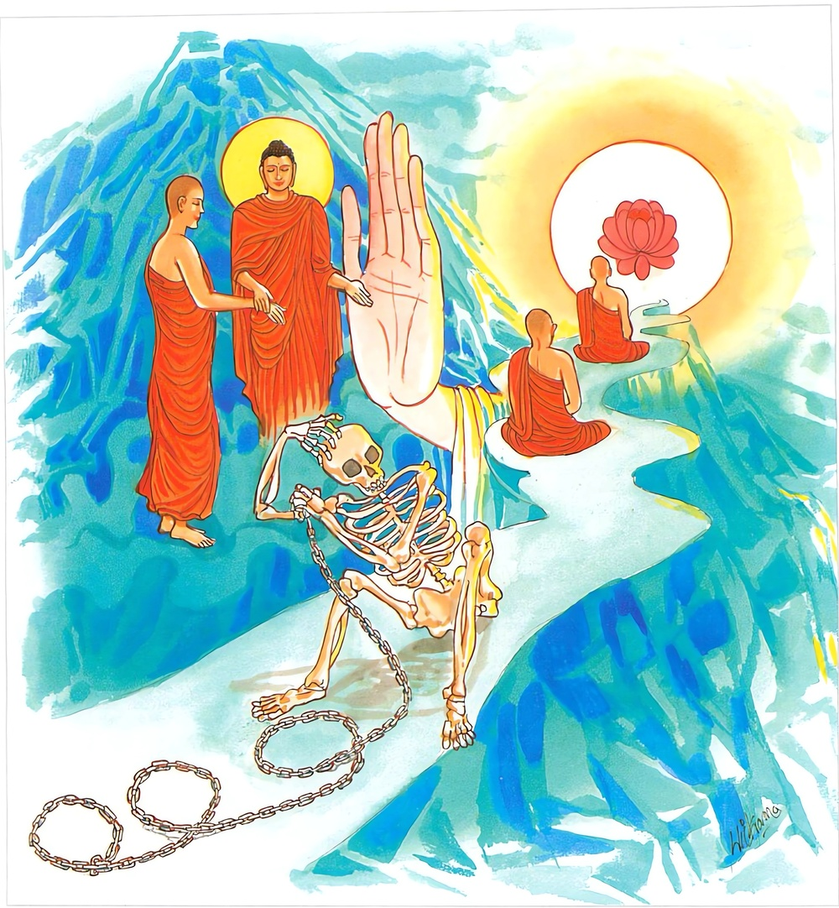

20-1 ආ ගිය තැන් ගැණ කතා කළ භික්ෂූන් වහන්සේලා
මෙම කතාව ධම්මපද අටුවාවෙන් ද කියවන්න.
මග්ගානට්ඨඞ්ගිකො සෙට්ඨො සච්චානං චතුරො පදා
විරාගො සෙට්ඨො ධම්මානං ද්විපදානං ච චක්ඛුමා.
මාර්ග අතුරෙන් අෂ්ටාඞ්ගිකමාර්ගය (අෂ්ටමිත්යාත්වයන් දුරැ ලන බැවිනුත් සිවුසස්හි දුක් පිරිසිඳීම් ආදිය කරණ බැවිනුත්) උතුම් ය. (වාක්සත්යය සම්මතිසත්යය දෘෂ්ටිසත්යය පරමාර්ත්ථසත්යය යන මේ) සත්ය අතුරෙන් දුක්ඛසත්යාදි සත්යපද සතර (සත්යාර්ත්ථයෙන්) උතුම්හ. (ප්රත්යයයෙන් උපන් නොඋපන්) සියලු ධර්ම අතුරෙන් විරාගධර්මය (හෙවත් නිවන) උතුමි. දෙ පා ඇති සියලු සතුන් අතුරෙහි පසැස් ඇත්තේ (බුදුරජ තෙම) උතුමි.
එසො’ව මග්ගො නත්ථඤ්ඤො දස්සනස්ස විසුද්ධියා
එතං හි තුම්හෙ පටිපජ්ජථ මාරස්සෙතං පමොහනං.
(මාර්ගඵල) දර්ශනයාගේ විශුද්ධිය පිණිස මෙය ම මඟ ය. අන් මඟෙක් නැත. තෙපි මෙ මඟෙහි පිළිපදිවු. මේ අරී අටැඟි මඟ මරහු මුළා කරන්නේ ය. (කෙලෙස් මරසෙන් සහිත දෙව්පුත් මරහු වංචිත කරන්නේ ය.)

එතං හි තුම්හෙ පටිපන්නා දුක්ඛස්සන්තං කරිස්සථ
අක්ඛාතො වෙ මයා මග්ගො අඤ්ඤාය සල්ලසත්ථනං.
මේ අරී අටැඟි මගෙහි පිළිපන් තෙපි සියලු සසර දුක කෙළවර කරවු. රාගාදි ශල්යයන් මඬනා (නොහොත් රාගාදි උල් උදුරා ලන) (අනුශ්රව අනුමාන නැති වැ) ප්රත්යක්ෂයෙන් ම දැන නිවනට පමුණුවන මේ මාර්ගය ඒකාන්තයෙන් මා විසින් කියන ලදී.

තුම්හෙහි කිච්චං ආතප්පං අක්ඛාතාරො තථාගතා
පටිපන්නා පමොක්ඛන්ති ඣායිනො මාරබන්ධනා.
මහණෙනි, දැන් තොප විසින් (කෙලෙස් තවන හෙයින් ආතප්ප නම් වූ) සම්යක්ප්රධානවීර්ය්යය කට යුතු යි. සර්වඥවරයෝ හුදෙක් නිවන් මඟ කියන්නාහු ම වෙති. (අත අල්ලා ගෙන නිවන් පමුණුවන්නෝ නො වෙති.) ධ්යායී වූ (හෙවත් ශමථ විදර්ශනා භාවනාවෙහි යෙදුනු) යෝගාවචරයෝ මාරබන්ධනයෙන් (ත්රෛභූමකවෘත්තයෙන්) මිදෙන්නාහු ය.

භික්ෂූන් පන් සියයක් දෙනා වහන්සේ බුදුරජුන් දනවු සැරිසරා පෙරළා සැවැත් නුවරට වැඩම කළ කල්හි උවැටන්හලෙහි රැස් ව හිඳ “අසවල් ගමෙහි මග කොට වළගොඩැලි නැති ව සම ව පිහිටා තුබුනේ ය, ගල් මුල් ද එහි නො වී ය, අසවල් ගමට යන මග, වළගොඩැලි සහිත ය, කණු කටු ගැල්කැට බොහෝ ය” යන ඈ ලෙසින් තම තමන් ආ ගිය මග තොට ගැණ කතා කරමින් හුන්හ. ඒ වේලෙහි බුදුරජානන් වහන්සේ ඒ භික්ෂූන්ට රහත් වන්නට තුබූ වාසනා ගුණය දැක එ තැනට වැඩම කොට පණවා තුබූ අසුනෙහි වැඩ හිඳ “මහණෙනි! තමුසේලා දැන් මෙහි මා එන්නට කලින් කළ කතාව කිමැ?”යි විචාරා එය දන්වා සිටි කල්හි “මහණෙනි! තමුසේලා දැන් මෙහි කළ කතාව මිනිසුන් යන එන මග තොට ගැණ ය, එයින් තමුසේලාට වැඩෙක් නැත, එහෙයින් නො සුදුසු ය, මහණුන් විසින් කළ යුත්තේ අරීඅටඟිමග ගැණ කතා ය, අරීඅටඟිමගෙහි මහණුන් විසින් යෝග කටයුතු ය, එය වඩන්නට උත්සාහ කළ යුතු ය, මෙසේ අරීඅටඟිමගෙහි යෙදෙන්නා වූ මහණ තෙමේ සියලු සසර දුකින් මිදේ ය, යි වදාරා මේ ධර්මදේශනාව කළ සේක.
මග්ගානට්ඨඞ්ගිකො සෙට්ඨො සච්චානං චතුරො පදා,
විරාගො සෙට්ඨො ධම්මානං ද්විපදානං ච චක්ඛුමා.
.
එසොව මග්ගො නත්ථඤ්ඤො දස්සනස්ස විසුද්ධියා,
එතං හි තුම්හෙ පටිපජ්ජථ මාරස්සෙතං පමොහනං.
.
එතං හි තුම්හෙ පටිපන්නා දුක්ඛස්සන්තං කරිස්සථ,
අක්ඛාතො වෙ මයා මග්ගො අඤ්ඤාය සල්ලසන්ථනං.
.
තුම්හෙහි කිච්චං ආතප්පං අක්ඛාතාරො තථාගතා,
පටිපන්නා පමොක්ඛන්ති ඣායිනො මාරබන්ධනාති.
මාර්ග අතුරෙහි අෂ්ටාඞ්ගිකමාර්ගය උතුම් වේ. සත්ය අතුරෙහි සත්ය පද සතර උතුම් වේ. ධර්ම අතුරෙහි නිර්වාණය උතුම් වේ. දෙපා ඇත්තවුන් අතුරෙහි බුදුරජ තෙමේ උතුම් වේ.
දර්ශනයාගේ විශුද්ධිය පිණිස මේ ම මාර්ගය වේ. අන් මගෙක් නැත්තේ ය. තෙපි මේ මගෙහි පිළිපදිවු. මෙය මරහු මුළා කරන්නේ ය.
මේ මගෙහි පිළිපන් තෙපි සසරදුක කෙළවර කරන්නහු ය. මා විසින් රාගාදී වූ කෙලෙස් උල් උපුටාලන මාර්ගය එකාන්තයෙන් ප්රත්යක්ෂ විසින් දැන ප්රකාශ කරණ ලද්දේ ය.
තොප විසින් කෙලෙස් තවන වීර්ය්යය කටයුතු ය. තථාගත වරයෝ මග කියන්නාහු වෙත්. නිවන්මගට ධ්යාන කරන්නෝ ත්රෛභූමකවෘත්තයෙන් මිදෙන්නාහු ය.
මග්ගානං = මාර්ගයන් අතුරෙහි.
මෙහි මග්ග යන්නෙන් ලෝකයෙහි ඇති තාක් කුදු මහත් පයින් යායුතු මං, රියෙන් යායුතු මං ඈ විසින් ගම් - ගඞ්ගා - පොකුණු - කුඹුරු ආදීණ්ගේ අවටින් අවුත් ගමට පිවිසෙන නන් වැදෑරුම් මං කියත්. “මහන්තඅමහන්තජඞ්ගමග්ගසකටමග්ගාදිවසෙන නානාවිධා සාමන්තගාමනදීතලාකඛෙත්තාදීහි ආගන්ත්වා ගාමං පවිසනමග්ගා” යනු විසින් ඒ කියන ලද්දේ ය. මෙහි ආදි ශබ්දබලයෙන් අහස්මං, මූදුමං, ඇල දොල විල් අසල මං ගණිත්. මේ මෙහි නිරුකති:- “පථිකෙහි මජ්ජතෙ නිත්තිණං කරීයෙතෙති = මග්ගො” යනු. මග යන්නන් විසින් තෘණරහිත කරණු ලබන්නේ ‘මග්ග’ නම්. ‘මජ්ජ + සංසුද්ධියං’ යන ධාතුයෙන් නිපන්නේ ය. “පථිකෙහි මග්ගියතෙති වා = මග්ගො” මග යන්නන් විසින් සොයනු ලබන්නේ හෝ ‘මග්ග’ නම්. ‘මග්ග + ගවෙසනෙ’ යනු එහි ධාතු යි. මග්ග ශබ්දයෙන් මෙහි දෙසැට මිසදිටු ද ගැණේ. ‘මග්ගානං’ යන මෙයින් ‘ඒ හැම මාර්ගයන් අතුරෙහි’යි අරුත් ගත යුතු ය.
අට්ඨඞ්ගිකො (මග්ගො) සෙට්ඨො = අෂ්ටාඞ්ගිකමාර්ගය ශ්රේෂ්ඨ වේ.
ජඞ්ගමාර්ග - ශකටමාර්ග - ද්වාෂෂ්ටිදෘෂ්ටිමාර්ගයන් අතුරෙහි, එකෙකිනුදු නිවනට යන්නට නො හැකිය. ආර්ය්යභාවය සිදු කරන්නට නො හැකිය. ඒ සිදු කරන්නට හැකි එක් ම මාර්ගය අෂ්ටාඞ්ගික මාර්ගය යි. මේ ම චතුස්සත්යාවබෝධය කරන්නා වූ එක් ම මාර්ගය වේ. “යාවතා භික්ඛවෙ! ධම්මා සඞ්ඛතා, අරියො අට්ඨඞ්ගිකො මග්ගො තෙසං අග්ගමක්ඛායති, යෙ භික්ඛවෙ! අරියෙ අට්ඨඞ්ගිකෙ මග්ගෙ පසන්තා, අග්ගෙ තෙ පසන්නා, අග්ගෙ ඛො පසන්නානං අග්ගො විපාකො හොති” යනු ද මෙහිලා දන්නේ ය. මහණෙනි! යම් පමණ හේතුයෙන් හටගත් ධර්මයෝ වෙත් ද, ආර්ය්ය අෂ්ටාඞ්ගික මාර්ගය ඔවුනට අග්රය යි කියනු ලැබේ. මහණෙනි! යම් කෙනෙක් ආර්ය්ය අෂ්ටාඞ්ගිකමාර්ගයෙහි පහන් වෙත් ද ඔවුහු අග්රස්ථානයෙහි පහන් වූවෝ වෙත්. අග්රස්ථානයෙහි පහන් වූවනට අග්ර විපාකයෙක් වන්නේ ය, යනු අරුත්.
මේ නිරුක්ති: “මං සිවං ගච්ඡති එතෙනොහි = මග්ගො” මෙයින් නිවනට යේනු යි ‘මග්ග’ නම්. ආර්ය්යමාර්ගය යි. “අවිජ්ජාසමමූළ්ගෙහි මග්ගෙතබ්බොති වා නිබ්බනත්ථිකෙහි මග්ගියතෙති = මග්ගො” අවිද්යායෙන් මුළාවූවන් විසිනුදු සෙවිය යුතු වූයේ, නිවන් කැමැත්තන් විසින් සොයනු ලබනුයේ ‘මග්ග’ නම්. එහෙයින් ලෝකයෙහි ඇති තාක් මාර්ගයන් අතුරෙහි ආර්ය්ය අෂ්ටාඞ්ගිකමාර්ගය ම ශ්රේෂ්ඨ ය, යි වදාළ සේක. “සබ්බෙසම්පිමග්ගානං සම්මාදිට්ඨි ආදීහි අට්ඨහි අඞ්ගෙහි මිච්ඡාදිට්ඨි ආදීනං අට්ඨන්තං පාපධම්මානං පහාණකරො නිරොධං ආරම්මණං කත්වා චතුසුපි සච්චෙසු දුක්ඛපරිජානනාදිකිච්චං සාධයමානො අට්ඨඞ්ගිකො මග්ගො සෙට්ඨො උත්තමො” යනු අටුවා. [1] මග්ග ශබ්දය පටිපදා - උපාය - කථාපබන්ධාදියෙහි ද හෙන්නේ ය.
සච්චානං චතුරො පදා = සත්ය අතුරෙහි සත්යපද සතර ශ්රේෂ්ඨ වේ.
“සච්චං භණෙ න කුජ්ඣෙය්ය” යනු විසින් ආ වාක්සත්යය හෝ වේවා, “සච්චො බ්රාහ්මණො, සච්චො ඛත්තියො” යනු විසින් ආ සම්මුතිසත්යය හෝ වේවා, “ඉදමෙව සච්චං මොඝමඤ්ඤං” යනු විසින් ආ දෘෂ්ටිසත්යය හෝ වේවා, “එකං හි සච්චං න දුතියං අත්ථි” යනු විසින් ආ පරමාර්ත්ථසත්යය හෝ වේවා, මෙයින් අන්ය වූ සත්යයෙක් වේ නම් ඒ හෝ වේවා, යන මේ සයලු සත්යයන් අතුරෙහි, පිරිසිඳ දතයුතු අරුතෙන්, පැහිය යුතු අරුතෙන්, ප්රත්යක්ෂ කටයුතු අරුතෙන්, වැඩිය යුතු අරුතෙන්, එකවට පිළිවිදිය යුතු අරුතෙන්, ඇති සැටි පිළිවිදිය යුතු අරුතෙන් “දුක්ඛං අරියසච්චං” යනු හා “දුක්ඛසමුදයං අරියසච්චං” යනු හා “දුක්ඛනිරොධං අරියසච්චං” යනු හා “දුක්ඛනිරොධගාමිනී අරියසච්චං” යනු හා ශ්රේෂ්ඨ වූ පදසතර වේ. උතුම් වූ පද සතර වේ. මෙයින් අන්ය වූ පදයෝ ශ්රේෂ්ඨ නො වෙත්. එහි වාක්සත්ය නම්: නිබොරුබස ය. සම්මුති සත්ය නම්: යමකට හෝ යමක්හට කටයුතු පහසු වනු සඳහා පණවාගත් නාම ය. දෘෂ්ටිසත්ය නම්: තමන් ගත් මිත්ථ්යාව ම සත්ය ය, ඉන් බැහැරිය සිස් ය, බොරුය යි ගත් දෘෂ්ටිය ය. පරමාර්ත්ථ සත්ය නම්: ස්කන්ධ - ධාතු - ආයතනාදී විසින් කෙරෙණ දේශනා ය. මාර්ගය හා නිවන කිය වේ.
විරාගො සෙට්ඨො ධම්මානං = ධර්ම අතුරෙහි නිවන ශ්රේෂ්ඨ වේ.
මේ මෙහිලා දතයුතු ය. “යාවතා භික්ඛවෙ! ධම්මා සඞ්ඛාතා වා, විරාගො තෙසං ධම්මානං අග්ගමක්ඛායති, යදිදං මදනිම්මදනො පිපාසවිනයො ආලයසමුග්ඝාතො වට්ටූපච්ඡෙදො තණ්හක්ඛයො විරාගො නිරොධො නිබ්බානං, යෙ භික්ඛවෙ! ධම්මෙ පසන්තා අග්ගෙ ඛො පන පසන්නානං අග්ගො විපාකො හොති” යනු.
මහණෙනි! හේතු බලයෙන් හට ගත්තා වූ හෝ හේතුබලයෙන් නො හට ගත්තා වූ යම් පමණ ධර්මයෝ වෙත් ද, නිවන ඔවුනට අග්ර ය, යි කියනු ලැබේ. රාගාදිමද මඩින්නා වූ පවස සන්සිඳු වන්නා වූ තෘෂ්ණාසඞ්ඛ්යාතආලය නසන්නා වූ සසරදුක් නසා ලන්නා වූ තෘෂ්ණව ගෙවා ලන්නා වූ පහ වූ රාගය ඇති නිරෝධ සඞ්ඛ්යාත වූ නිවන ය ඒ අග්ර වනුයේ. මහණෙනි! යම් කෙනෙක් ඒ විරාගධර්මයෙහි පහන් වෙත් ද, ඔවුහු අග්රස්ථානයෙහි පහන් වූවෝ වෙත්. අග්රස්ථානයෙහි පහන් වූවනට අග්රවිපාකයෙක් වන්නේ ය, යන අරුත්. [2]
ද්විපදානං ච චක්ඛුමා = දෙපා ඇත්තවුන් අතුරෙහි බුදුරජ තෙමේ ශ්රේෂ්ඨ වේ.
“යාවතා භික්ඛවෙ! සත්තා අපදා වා දිපදා වා චතුප්පදා වා බහුප්පදා වා රූපිනො වා අරූපිනො වා සඤ්ඤිනො වා අසඤ්ඤිනො වා නෙවසඤ්ඤිනාසඤ්ඤිනො වා, තථාගතො තෙසං අග්ගමක්ඛායති අරහං සම්මාසම්බුද්ධො, යෙ භික්ඛවෙ! බුද්ධෙ පසන්නා, අග්ගෙ තෙ පසන්නා, අග්ගෙ ඛො පන පසන්නානං අග්ගො විපාකො හොති” යන මේ ව්යක්තිය දන්නේ ය.
මහණෙනි! පා නැත්තා වූ හෝ දෙපා ඇත්තා වූ හෝ සිවපා ඇත්තා වූ හෝ බොහෝ පා ඇත්තා වූ හෝ රූපී වූ හෝ අරූපී වූ හෝ සංඥි වූ හෝ අසංඥි වූ හෝ නෛසංඥීනාසංඥි වූ හෝ යම් පමණ සත්ත්වයෝ වෙත් ද, සම්මා සම්බුදුරජානන් වහන්සේ ඔවුනට අග්රහ යි කියනු ලැබෙත්. මහණෙනි! යම් කෙනෙක් බුදුරජුන් කෙරෙහි පහන් වෙත් ද එවුහු අග්රස්ථානයෙහි පහන් වූවෝ වෙත්. අග්රස්ථානයෙහි පහන් වූවනට අග්ර විපාකයෙක් වන්නේය, යන අරුත්.
මෙහි ආපදා නම්: නයි - පොළොන් - පිඹුරු - ගැරඬි ආදීන් හා මතස්ය ජාතීහු ය. දිපදා නම්: දෙවි - බඹ - මිනිස් - යක් - රකුස් ආදීන් හා පක්ෂිජාතීහු ය. චතුප්පදා නම්: ඇත් - අස් - ගොන් - කොටලු - එළු - බැටලු ආදීහු ය. බහුප්පදා නම්: පත්තෑ - හැකරැලි ආදීහු ය. රූපී නම්: කාමාවචර - රූපාවචර සත්ත්වයෝ ය. සංඥි නම්: සංඥාභවයෙහි උපන්නෝ ය. අසඤ්ඤි නම්: අසංඥා භවයෙහි උපන්නෝ ය. නෛවසංඥීනාසංඥී නම්: භවාග්රයෙහි උපන්නෝ ය. ලෝකයෙහි ඇති තාක් මේ කියූ සත්ත්වයන් අතුරෙහි සම්මා සම්බුදුරජානන් වහන්සේ අද්විතීයහ. අප්රතිමයහ. අප්රතිසමයහ. අප්රතිභාගයහ. අප්රතිපුද්ගලයහ. අසමයහ. අසමසමයහ.
මසැස - දිවැස - පැණැස - බුදුඇස - සමතැස යන පසැසින් යුක්ත බැවින් බුදුරජානන් වහන්සේ චක්ඛුමන්තු නම්. විබත් ගත්තේ චක්ඛුමා ය. එහි සිවුරගින් යුත් ගනඳුරෙහි ද යොදුනක් ඝන වූ විදුරුගල් පවා විනිවිද දක්නට හැකි පස් පැහැයෙන් දිස්නා පියවා ඇස, මසැස නම් ය. චුතූපපාතැ යි කියූ මැරෙණ - උපදින සත්ත්වයන් දක්නා දිබ්බචක්ඛුඤාණය, දිවැස නම් ය. කාලත්රයවිෂය වූ සර්වධර්මයන් එකකුත් නො හැර දක්නා නුවණ පැණැස නම් ය. දශසහස්රීලෝකධාතුයෙහි අල්පරජස්ක - මහාරජස්කාදි සත්ත්වයන් දක්නා නුවණ, බුදුඇස නම් ය. සබ්බඤ්ඤුතඤාණය, සමතැස නම් ය.
එසො එව මග්ගො නත්ථි අඤ්ඤො දස්සනාය විසුද්ධියා = දර්ශනයාගේ විශුද්ධිය පිණිස මේ ම මාර්ගය වේ. අන්යමාර්ගයක් නැත්තේ ය.
මාර්ගඵලසඞ්ඛ්යාතදර්ශනයාගේ පිරිසිදුබවට එක් ම මාර්ගය අෂ්ටාඞ්ගිකමාර්ගය යි. ඒ හැර අන් මගෙක් නැත්තේ ය. මාර්ගඵලඥානය ලැබීමට අෂ්ටාඞ්ගිකමාර්ගය ම වැඩිය යුතු ය. සිවුසස් හා නිවන දක්නා මගපලනුවණ, දස්සන නමි. [3]
එතං හි තුම්හෙ පටිපජ්ජථ = තෙපි මේ මගෙහි පිළිපදිවු.
නිවන් ලැබීමට සසර දුක් මුළුමනින් අවසන් කිරීමට ඇති එක ම මග, අෂ්ටාඞ්ගිකමාර්ගය බැවින්, එය ලෞකික - ලෝකෝත්තර විසින් වඩා ගන්නට ඒ මගින් නිවන් ලබන්නට උත්සාහවත් විය යුතු ය.
මාරස්ස එතං පමොහනං = මේ අෂ්ටාඞ්ගික මාර්ගය මරු මුළා කරන්නේ ය.
කෙලෙස් මරුසෙන් පරයන බැවින් හා දෙව්පුත් මරුට විෂය නො වන බැවින් හා අෂ්ටාඞ්ගිකමාර්ගය මරුට මහත් අවුලෙකි. මහත් මුළාවෙකි. මරහු බැඳ තැබීමෙකි. එහෙයින් මාරපමොහන නම් වේ.
එතම්හි තුම්හෙ පටිපන්නා දුක්ඛස්සන්තං කරිස්සථ = මේ මගෙහි පිළිපන් තෙපි සසර දුක් කෙළවර කරන්නහු ය.
සියලු සසරදුක් කෙළවර වනුයේ නිවන් ලැබීමෙනි. නිවන සංසාරදුක්ඛයාගේ කෙළවර ය. දුක් හා එහි කිසිත් හැපීමෙක් නැත්තේ ය. දුක් නැති කිරීමෙහි මාර්ගය, අෂ්ටාඞ්ගිකමාර්ග ය යි. එහෙයින් එහි පිළිපැද දුක් කෙළවර කරවු,යි මෙයින් වදාළ සේක.
අක්ඛාතො චෙ මයා මග්ගො අඤ්ඤාය සල්ලසන්ථනං = රාගාදී වූ හුල් උදුරණ මග දැන මේ මග එකාන්තයෙන් මා විසින් කියන ලදි.
අඤ්ඤාය දැන. මේ දැනීම ප්රත්යක්ෂසිද්ධ ය. අනුන්ගෙන් අසා දැන හෝ මේ මෙසේ විය යුතු ය යි අනුමානයෙන් හෝ දැන ගැණීමෙක් නො වේ. ඇසින් දුටු සේ නුවණින් දක්නා ලද්දේ ය, යනු අරුත්.
රාග - ද්වේෂාදික්ලේශධර්මයේ අරමුණු ලැබ සිත්හි වහා නැගී සත්ත්වයන් විදින පෙළන බැවින් සල්ල නම් වෙත්. රාග සල්ලාදීන්ගේ නිම්මථනය මැඩලීම උපුටාලීම සල්ලසන්ථන නම් වේ.
තුම්හෙහි කිච්චං ආතප්පං = තොප විසින් කෙලෙස් තවන වීර්ය්යය කටයුතු ය.
ආතප්ප නම්: වීර්ය්ය යි. මෙයින් ගැණෙන වීර්ය්ය සාමාන්ය වීර්ය්යයෙක් නො වේ. මේ වනාහි උපන් කෙලෙස් නැසීම, නො උපන් කෙලෙසුනට උපදින්නට නො දීම, නො උපන් කුසල් උපදවාලීම, උපන් කුසල් වැඩීම යන කෘත්යය සතරක් සිදු කරණ සම්යක්ප්රධානවීර්ය්යය යි. ඒ මේ වීර්ය්යය කෙලෙස් තවාලන බැවින් ‘ආතප්ප’යි කියනු ලැබේ. එහෙයින් තොප විසින් උපන් කෙලෙස් සිඳ හරිණු පිණිස, නො උපන් කෙලෙස් නො උපදනා පිණිස, නො උපන් කුසල් උපදනා පිණිස, උපන් කුසල් වැඩෙනු පිණිස වීර්ය්යය කටයුතු ය,යි වදාළ සේක. [4]
අක්ඛාතාරො තථාගතා = තථාගතවරයෝ (මග) කියන්නෝ ය.
තථාගතයන් වහන්සේලා යායුතු මග, නිවන් ලබන පිළිවෙත වදාරණු විනා අතින් ගෙණ තර්ජනය කොට බලයෙන් ගෙණ කිසිවකු නිවනට නො ද පමුණු වන්නාහ. [5]
පටිපන්නා පමොක්ඛන්ති ඣායිනො මාරබන්ධනා = නිවන් මඟට පිළිපන් ධ්යාන කරන්නෝ මාරබන්ධනයෙන් මිදෙන්නාහු ය.
ශමථ - විදර්ශනා විසින් නිතර භාවනායෙහි යෙදී වසන්නෝ නිවන්මගෙහි පිළිපදින්නෝ මාරබන්ධන යයි කියු ත්රෛභූමකවෘත්තයෙන් මිදෙන්නාහු ය. [6]
ධර්මදේශනාවගේ අවසානයෙහි ඒ භික්ෂූහු රහත්බවෙහි පිහිටා ගත්හ. ධර්මදේශනා තොමෝ පැමිණ සිටි පිරිසට ද වැඩ සහිත වූ ය.
පඤ්චශතභික්ෂු වස්තුව නිමි.